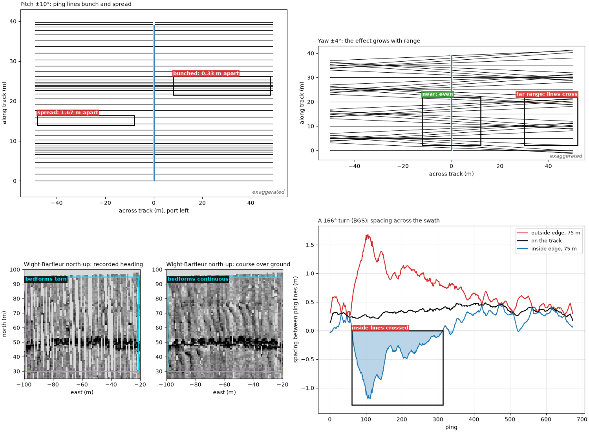
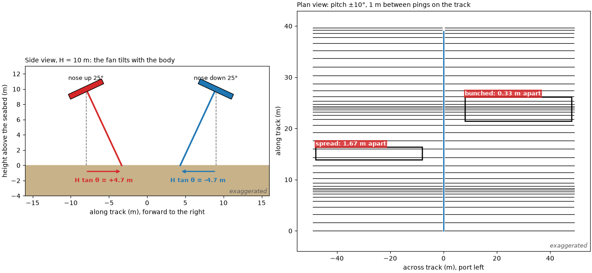
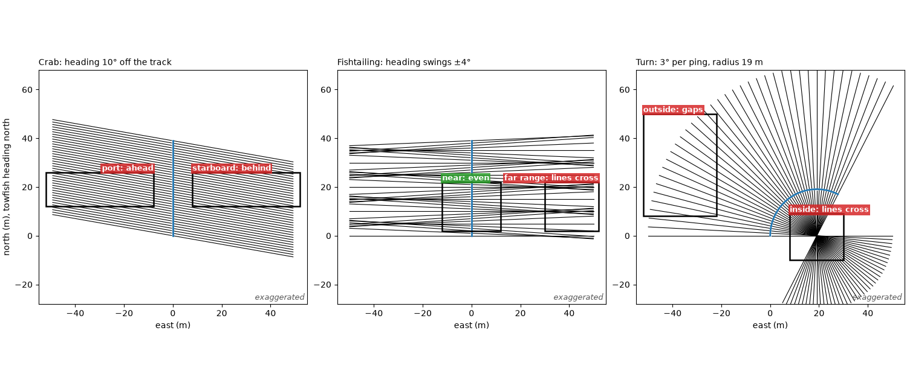
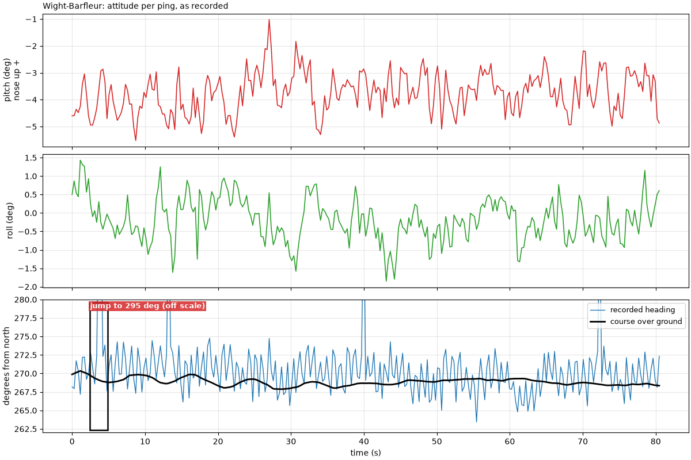
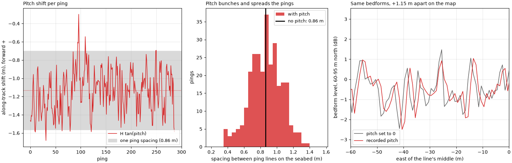
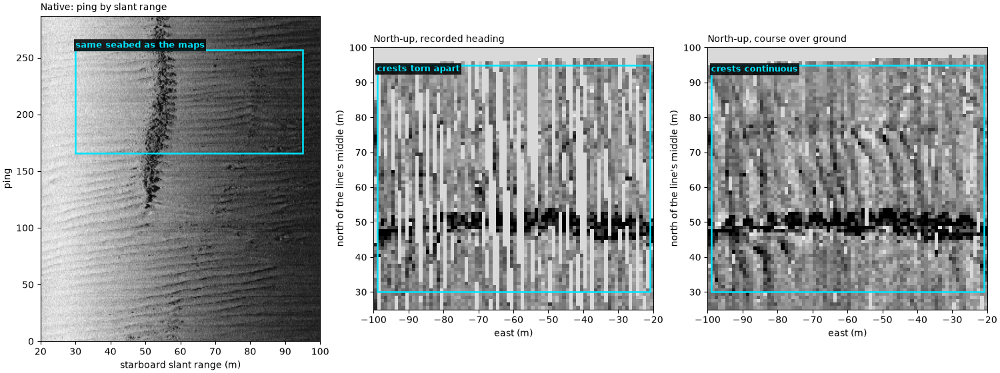
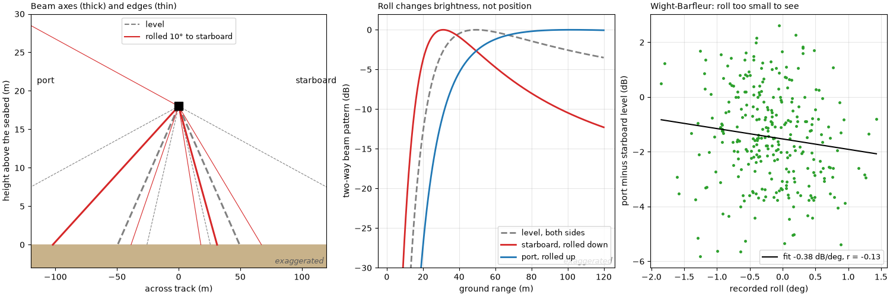
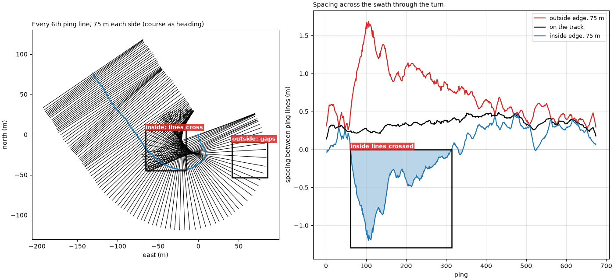

Note
Go to the end to download the full example code.
Towfish attitude: pitch, roll and yaw#

A towfish is not a steady platform. Waves, the cable and the current tip it nose up and down (pitch), lean it to one side (roll) and swing its nose away from the direction it travels (yaw). Each moves where a ping lands on the seabed or how bright it is, and each leaves a pattern in the image that can be mistaken for the seabed. Learn these patterns before calling something a target.
Pitch. sidescanpy models each ping as a thin fan of sound
perpendicular to the towfish’s body, over a flat seabed
(compute_geometric_ranges()). Pitched by
theta (positive nose up) at altitude H, the fan tilts forward
by theta and meets the seabed
ahead of the point below the towfish, the same at every range. A sample
at slant range R lands at an across-track distance
slightly less than without pitch. So pitch shifts a whole ping along
track; it does not rotate it. When the pitch changes from ping to ping,
the spacing between ping lines on the seabed changes by
H (tan theta_(i+1) - tan theta_i): lines bunch up where it shrinks
(on a map drawn ping line by ping line, a bright stripe) and spread
where it grows (a dark stripe, or gaps).
Yaw. When the towfish’s heading differs from its track, by a steady
crab angle in a cross current or by swinging from side to side
(fishtailing), each ping line is rotated by that angle psi. A
sample at across-track distance y lands y sin psi along track
from where it would be with no yaw, so the shift grows with range,
and is opposite on port and starboard. When the heading changes by
Delta psi between pings, the spacing between ping lines at y is
with Delta x_0 the spacing on the track. In a turn the outside of
the swath spreads into gaps, and on the inside the lines pile up, then
cross where y exceeds the turn radius Delta x_0 / Delta psi.
Roll. Rolling by phi tilts each side’s beam up or down by
phi. Slant range does not depend on roll, so over a flat seabed the
samples still land in the same place. What changes is brightness: one
side’s beam swings toward the near range, the other’s toward the far
range. Roll matters for position only through the altitude: an
altimeter tilted by phi reads H / cos phi.
Data: JNCC Wight-Barfleur Reef (Open Government Licence v3.0) and BGS London Gateway (Open Government Licence v3.0, contains data supplied by UKRI); see Example data.
Usage: python examples/theory/plot_towfish_attitude.py [output_dir]
# 2026 rshomberg@uri.edu
import sys
from pathlib import Path
import matplotlib.pyplot as plt
import numpy as np
from matplotlib.patches import Polygon, Rectangle
from pyproj import Transformer
from sidescanpy import datasets
from sidescanpy.io import read_and_convert
from sidescanpy.log import configure_logging
from sidescanpy.processing import (
altitude_from_bottom_track,
compute_geometric_ranges,
compute_georeferencing,
course_over_ground,
interpolate_aux_onto_pings,
slice_by_range,
smooth_navigation,
)
out = Path(sys.argv[1]) if len(sys.argv) > 1 else Path(".")
out.mkdir(parents=True, exist_ok=True)
configure_logging("ERROR")
C = 1500.0 # m/s; the JSF file records no sound velocity
MARK = "#00e5ff" # label colour on the sonar images
BAD, GOOD = "#d62728", "#2ca02c"
def mark(ax, x0, x1, y0, y1, text, colour=MARK, inside=False, ha="left", dashed=False):
"""Box a feature and label it, above the box or just inside its top."""
ax.add_patch(Rectangle((x0, y0), x1 - x0, y1 - y0, fill=False, ec=colour if colour == MARK else "k", lw=1.8,
ls="--" if dashed else "-", zorder=5))
if text:
ax.text(x0 if ha == "left" else x1, y1, text, color=colour if colour == MARK else "white", fontsize=9,
fontweight="bold", ha=ha, va="top" if inside else "bottom", clip_on=True, zorder=6,
bbox=dict(fc="black" if colour == MARK else colour, alpha=0.85, ec="none", pad=1.5))
def exaggerated(ax):
ax.text(0.99, 0.01, "exaggerated", transform=ax.transAxes, ha="right", va="bottom", fontsize=9,
style="italic", color="0.35")
Pitch shifts each ping along track#
Left: a side view. The fan is perpendicular to the body, so a towfish
pitched nose up by theta puts the whole ping H tan theta ahead
of the point below it, and nose down puts it behind. Right: a plan view
of 40 pings over flat seabed, the towfish moving up the page at a
steady speed while its pitch swings by ±10° (far more than a towfish
usually does) with a period of 16 pings. Each line is one ping on the
seabed, from the first seabed return to 50 m.
H_DEMO, DX_DEMO, R_DEMO = 10.0, 1.0, 50.0
def side_view(ax, theta_deg, x0, colour, label):
theta = np.radians(theta_deg)
body = np.array([[-2.4, -0.35], [2.4, -0.35], [2.4, 0.35], [-2.4, 0.35]])
rot = np.array([[np.cos(theta), -np.sin(theta)], [np.sin(theta), np.cos(theta)]])
ax.add_patch(Polygon(body @ rot.T + [x0, H_DEMO], fc=colour, ec="k", zorder=4))
hit = x0 + H_DEMO * np.tan(theta)
ax.plot([x0, hit], [H_DEMO, 0], color=colour, lw=2.5)
ax.plot([x0, x0], [H_DEMO, 0], color="0.4", lw=1, ls="--")
ax.annotate("", xy=(hit, -0.8), xytext=(x0, -0.8), arrowprops=dict(arrowstyle="->", color=colour, lw=1.8))
ax.text((x0 + hit) / 2, -1.6, f"H tan θ = {H_DEMO * np.tan(theta):+.1f} m", ha="center", va="top",
color=colour, fontsize=9, fontweight="bold")
ax.text(x0, H_DEMO + 1.2, label, ha="center", fontsize=9)
def pitch_plan(ax, n=40, amplitude_deg=10.0, period=16):
i = np.arange(n)
theta = np.radians(amplitude_deg * np.sin(2 * np.pi * i / period))
along = i * DX_DEMO + H_DEMO * np.tan(theta)
for a, t in zip(along, theta):
reach = np.sqrt(R_DEMO ** 2 - (H_DEMO / np.cos(t)) ** 2)
ax.plot([-reach, -0.5], [a, a], color="k", lw=0.9)
ax.plot([0.5, reach], [a, a], color="k", lw=0.9)
ax.plot(np.zeros(n), i * DX_DEMO, color="C0", lw=2, label="towfish track")
spacing = np.diff(along)
tight, wide = int(np.argmin(spacing[:24])), int(np.argmax(spacing[:24]))
mark(ax, 8, 48, along[tight] - 2.2, along[tight + 1] + 2.2, f"bunched: {spacing[tight]:.2f} m apart",
colour=BAD)
mark(ax, -48, -8, along[wide] - 0.4, along[wide + 1] + 0.4, f"spread: {spacing[wide]:.2f} m apart",
colour=BAD)
ax.set_xlim(-55, 55)
ax.set_ylim(-4, n * DX_DEMO + 3)
ax.set_xlabel("across track (m), port left")
ax.set_ylabel("along track (m)")
exaggerated(ax)
return spacing
fig, (ax_s, ax_p) = plt.subplots(1, 2, figsize=(13, 6), constrained_layout=True, width_ratios=[1, 1.2])
ax_s.axhspan(-4, 0, color="#c8b28a")
side_view(ax_s, 25.0, -8, "C3", "nose up 25°")
side_view(ax_s, -25.0, 9, "C0", "nose down 25°")
ax_s.set_xlim(-16, 16)
ax_s.set_ylim(-4, 13)
ax_s.set_aspect("equal")
ax_s.set_xlabel("along track (m), forward to the right")
ax_s.set_ylabel("height above the seabed (m)")
ax_s.set_title(f"Side view, H = {H_DEMO:.0f} m: the fan tilts with the body", loc="left", fontsize=10)
exaggerated(ax_s)
spacing = pitch_plan(ax_p)
ax_p.set_title(f"Plan view: pitch ±10°, {DX_DEMO:.0f} m between pings on the track", loc="left", fontsize=10)
fig.savefig(out / "towfish_attitude_pitch.png", dpi=150)
print(f"pitch diagram: spacing between ping lines from {spacing.min():.2f} to {spacing.max():.2f} m "
f"for {DX_DEMO:.0f} m on the track")

pitch diagram: spacing between ping lines from 0.33 to 1.67 m for 1 m on the track
Yaw rotates each ping line#
The same 40 pings, now level, with three kinds of yaw. Left: a steady 10° crab, the towfish pointing 10° to starboard of its track; the lines stay evenly spaced but the swath is skewed, port ahead and starboard behind. Middle: fishtailing, the heading swinging by ±4° with a period of 10 pings; at long range the lines cross and leave gaps. Right: a turn to starboard of 3° per ping (radius 19 m): the outside spreads, and on the inside every line passes through the centre of the turn and crosses all the others there.
def ping_lines(ax, east, north, heading_deg, reach=R_DEMO, inner=0.5, every=1, colour="k"):
"""Ping lines in plan: from each position, across the heading, both sides."""
h = np.radians(heading_deg)
right = np.c_[np.cos(h), -np.sin(h)] # starboard unit vector (east, north)
for k in range(0, len(east), every):
for side in (-1, 1):
x = east[k] + side * right[k, 0] * np.array([inner, reach])
y = north[k] + side * right[k, 1] * np.array([inner, reach])
ax.plot(x, y, color=colour, lw=0.8)
ax.plot(east, north, color="C0", lw=2)
n = 40
straight = np.arange(n) * DX_DEMO
fig, axes = plt.subplots(1, 3, figsize=(15, 6.2), constrained_layout=True)
ping_lines(axes[0], np.zeros(n), straight, np.full(n, 10.0))
mark(axes[0], 8, 52, 12, 26, "starboard: behind", colour=BAD)
mark(axes[0], -52, -8, 12, 26, "port: ahead", colour=BAD, ha="right")
axes[0].set_title("Crab: heading 10° off the track", loc="left", fontsize=10)
wag = 4.0 * np.sin(2 * np.pi * np.arange(n) / 10)
ping_lines(axes[1], np.zeros(n), straight, wag)
mark(axes[1], 30, 52, 2, 22, "far range: lines cross", colour=BAD, ha="right")
mark(axes[1], -12, 12, 2, 22, "near: even", colour=GOOD)
axes[1].set_title("Fishtailing: heading swings ±4°", loc="left", fontsize=10)
rate = np.radians(3.0)
radius = DX_DEMO / rate
psi = np.arange(n) * rate
turn_e, turn_n = radius * (1 - np.cos(psi)), radius * np.sin(psi)
ping_lines(axes[2], turn_e, turn_n, np.degrees(psi))
mark(axes[2], -52, -22, 8, 50, "outside: gaps", colour=BAD)
mark(axes[2], 8, 30, -10, 9, "inside: lines cross", colour=BAD)
axes[2].set_title(f"Turn: 3° per ping, radius {radius:.0f} m", loc="left", fontsize=10)
for ax in axes:
ax.set_xlim(-55, 55)
ax.set_ylim(-28, 68)
ax.set_aspect("equal")
ax.set_xlabel("east (m)")
exaggerated(ax)
axes[0].set_ylabel("north (m), towfish heading north")
fig.savefig(out / "towfish_attitude_yaw.png", dpi=150)
print(f"turn diagram: radius {DX_DEMO:.0f} / {rate:.4f} rad = {radius:.1f} m; at 50 m the outer lines are "
f"{DX_DEMO + 50 * rate:.2f} m apart, the inner {DX_DEMO - 50 * rate:+.2f} m (negative: crossed)")

turn diagram: radius 1 / 0.0524 rad = 19.1 m; at 50 m the outer lines are 3.62 m apart, the inner -1.62 m (negative: crossed)
The line and its recorded attitude#
The Wight-Barfleur JSF file records pitch, roll and heading from the
towfish’s own sensors about ten times a second.
interpolate_aux_onto_pings() places them,
and the positions, on the pings. The file has no altitude, so it comes
from the first bottom return
(altitude_from_bottom_track()). The course
over ground is the direction of travel measured from the positions
10 s either side of each ping
(course_over_ground()).
survey = read_and_convert([datasets.fetch("jncc_wight_barfleur_20130321174522.jsf")], fmt="jsf")
survey = interpolate_aux_onto_pings(survey)
wb = survey.get_frequency("hz_521000").dataset
wb = wb.isel(ping=np.isfinite(wb["backscatter_intensity"].values).all(axis=(1, 2)))
wb = altitude_from_bottom_track(slice_by_range(wb, max_m=100.0).load())
t = (wb["time"].values - wb["time"].values[0]) / np.timedelta64(1, "s")
pitch, roll = wb["pitch_deg"].values, wb["roll_deg"].values
heading = wb["heading_deg"].values
cog = course_over_ground(wb, half_window_s=10.0)
H = wb["altitude_m"].values
east, north = Transformer.from_crs(4326, 32630, always_xy=True).transform(wb["longitude"].values,
wb["latitude"].values)
DX = float(np.sum(np.hypot(np.diff(east), np.diff(north)))) / (wb.sizes["ping"] - 1)
crab = (heading - cog + 180) % 360 - 180
print(f"{wb.sizes['ping']} pings over {t[-1]:.1f} s, ping spacing {DX:.3f} m, altitude {np.median(H):.1f} m "
f"(bottom track, {H.min():.1f} to {H.max():.1f} m)")
print(f"pitch {np.median(pitch):+.2f} deg median, {np.percentile(pitch, 5):+.2f} to {np.percentile(pitch, 95):+.2f} "
f"(5-95 %); change between pings {np.std(np.diff(pitch)):.2f} deg (standard deviation)")
print(f"roll {np.median(roll):+.2f} deg median, standard deviation {roll.std():.2f} deg")
print(f"course over ground {np.nanmin(cog):.1f} to {np.nanmax(cog):.1f} deg; heading minus course: median "
f"{np.nanmedian(crab):+.2f} deg, {np.nanpercentile(crab, 5):+.2f} to {np.nanpercentile(crab, 95):+.2f} (5-95 %)")
dpsi = np.abs(np.diff(heading))
print(f"recorded heading change between pings: median {np.median(dpsi):.2f} deg, largest {dpsi.max():.1f} deg")
fig, axes = plt.subplots(3, 1, figsize=(12, 8), sharex=True, constrained_layout=True)
axes[0].plot(t, pitch, color="C3", lw=1.2)
axes[0].set_ylabel("pitch (deg)\nnose up +")
axes[1].plot(t, roll, color="C2", lw=1.2)
axes[1].set_ylabel("roll (deg)")
axes[2].plot(t, heading, color="C0", lw=1.0, label="recorded heading")
axes[2].plot(t, cog, color="k", lw=2, label="course over ground")
axes[2].set_ylabel("degrees from north")
axes[2].set_ylim(262, 280)
axes[2].legend(loc="upper right", fontsize=9)
axes[2].set_xlabel("time (s)")
jump = int(np.argmax(np.abs(heading - cog)))
mark(axes[2], t[jump] - 1.2, t[jump] + 1.2, 262.3, 279.6, f"jump to {heading[jump]:.0f} deg (off scale)",
colour=BAD, inside=True)
for ax in axes:
ax.grid(alpha=0.3)
axes[0].set_title("Wight-Barfleur: attitude per ping, as recorded", loc="left", fontsize=10)
fig.savefig(out / "towfish_attitude_recorded.png", dpi=150)

287 pings over 80.5 s, ping spacing 0.864 m, altitude 17.5 m (bottom track, 16.1 to 18.7 m)
pitch -3.71 deg median, -4.94 to -2.60 (5-95 %); change between pings 0.63 deg (standard deviation)
roll -0.20 deg median, standard deviation 0.58 deg
course over ground 267.9 to 270.3 deg; heading minus course: median +1.11 deg, -2.95 to +5.07 (5-95 %)
recorded heading change between pings: median 2.92 deg, largest 25.5 deg
Pitch on this line: the shift against the ping spacing#
The shift H tan theta for every ping, and the spacing between
consecutive ping lines on the seabed with and without it. The shift is
then checked on a map: the samples are georeferenced twice, with the
recorded pitch and with pitch set to 0 (course over ground as heading
both times), averaged into the same 1 m north-up cells, and the
along-track offset between the two maps is found by cross-correlation
over the starboard bedforms. The cells are 1 m, a little coarser than
the ping spacing, so that every cell holds a ping.
shift = H * np.tan(np.radians(pitch))
along_with = np.arange(wb.sizes["ping"]) * DX + shift
spacing_with = np.diff(along_with)
print(f"shift H tan(pitch): median {np.median(shift):+.2f} m, {shift.min():+.2f} to {shift.max():+.2f} m; "
f"worked: {np.median(H):.1f} x tan({np.median(pitch):+.2f} deg) = {np.median(H) * np.tan(np.radians(np.median(pitch))):+.2f} m")
print(f"spacing between ping lines with pitch: {spacing_with.min():.2f} to {spacing_with.max():.2f} m "
f"(5-95 %: {np.percentile(spacing_with, 5):.2f} to {np.percentile(spacing_with, 95):.2f}) against {DX:.2f} m "
f"without; ping-to-ping change of the shift {np.std(np.diff(shift)):.2f} m (standard deviation)")
CELL = 1.0 # m: coarser than the 0.86 m ping spacing, so no empty rows between pings
mid_e, mid_n = float(np.mean(east)), float(np.mean(north))
edges_e = np.arange(-130, 130 + CELL, CELL)
edges_n = np.arange(-100, 100 + CELL, CELL)
def north_up(ds, heading_deg, pitch_deg=None):
"""Mean level (dB) of every sample in 1 m north-up cells, local metres from the line's middle."""
ds = ds.assign(heading_deg=("ping", heading_deg))
if pitch_deg is not None:
ds = ds.assign(pitch_deg=("ping", pitch_deg))
ds = compute_georeferencing(compute_geometric_ranges(ds))
lon, lat = ds["longitude_per_sample"].values, ds["latitude_per_sample"].values
db = 20 * np.log10(np.abs(ds["backscatter_intensity"].values.astype(float)) + 1.0)
ok = np.isfinite(lon) & np.isfinite(lat)
e, n = Transformer.from_crs(4326, 32630, always_xy=True).transform(lon[ok], lat[ok])
total, _, _ = np.histogram2d(n - mid_n, e - mid_e, bins=[edges_n, edges_e], weights=db[ok])
count, _, _ = np.histogram2d(n - mid_n, e - mid_e, bins=[edges_n, edges_e])
with np.errstate(invalid="ignore"):
return total / count
map_pitch = north_up(wb, cog)
map_flat = north_up(wb, cog, pitch_deg=np.zeros(wb.sizes["ping"]))
map_heading = north_up(wb, heading)
y_cells = edges_n[:-1] + CELL / 2
x_cells = edges_e[:-1] + CELL / 2
BAND = (y_cells > 60) & (y_cells < 95) # starboard (north) bedforms, 60 to 95 m from the track
COLS = (x_cells > -110) & (x_cells < 110)
def profile(grid):
"""Along-track (east) profile over the bedform band, mean removed, gaps filled."""
p = np.nanmean(grid[np.ix_(BAND, COLS)], axis=0)
p = np.where(np.isfinite(p), p, np.nanmean(p))
return p - p.mean()
p_pitch, p_flat = profile(map_pitch), profile(map_flat)
FINE = 0.05 # m: the 1 m profiles interpolated finer, to read the offset to a few centimetres
fine_x = np.arange(x_cells[COLS][0], x_cells[COLS][-1], FINE)
fine_pitch, fine_flat = np.interp(fine_x, x_cells[COLS], p_pitch), np.interp(fine_x, x_cells[COLS], p_flat)
lags = np.arange(-60, 61)
xcorr = np.array([np.sum(np.roll(fine_flat, k)[100:-100] * fine_pitch[100:-100]) for k in lags])
best = lags[int(np.argmax(xcorr))] * FINE
heading_east = float(np.sin(np.radians(np.nanmedian(cog))))
print(f"map with pitch against map without: offset {best:+.2f} m east; expected median shift x sin(course) = "
f"{np.median(shift) * heading_east:+.2f} m east (the line runs west, so aft is east)")
fig, (ax_a, ax_b, ax_c) = plt.subplots(1, 3, figsize=(15, 4.8), constrained_layout=True,
width_ratios=[1.3, 1, 1.3])
ax_a.plot(np.arange(shift.size), shift, color="C3", lw=1.2, label="H tan(pitch)")
ax_a.axhline(np.median(shift), color="C3", ls=":", lw=1)
ax_a.axhspan(np.median(shift) - DX / 2, np.median(shift) + DX / 2, color="0.85", zorder=0,
label=f"one ping spacing ({DX:.2f} m)")
ax_a.set_xlabel("ping")
ax_a.set_ylabel("along-track shift (m), forward +")
ax_a.set_title("Pitch shift per ping", loc="left", fontsize=10)
ax_a.legend(loc="lower right", fontsize=9)
ax_a.grid(alpha=0.3)
ax_b.hist(spacing_with, bins=np.arange(0.2, 1.6, 0.05), color="C3", alpha=0.8, label="with pitch")
ax_b.axvline(DX, color="k", lw=2, label=f"no pitch: {DX:.2f} m")
ax_b.set_xlabel("spacing between ping lines on the seabed (m)")
ax_b.set_ylabel("pings")
ax_b.set_title("Pitch bunches and spreads the pings", loc="left", fontsize=10)
ax_b.legend(fontsize=9)
xs = x_cells[COLS]
ax_c.plot(xs, p_flat, color="0.4", lw=1.2, label="pitch set to 0")
ax_c.plot(xs, p_pitch, color="C3", lw=1.2, label="recorded pitch")
ax_c.set_xlim(-60, 0)
ax_c.set_xlabel("east of the line's middle (m)")
ax_c.set_ylabel("bedform level, 60-95 m north (dB)")
ax_c.set_title(f"Same bedforms, {best:+.2f} m apart on the map", loc="left", fontsize=10)
ax_c.legend(fontsize=9, loc="lower left")
ax_c.grid(alpha=0.3)
fig.savefig(out / "towfish_attitude_pitch_measured.png", dpi=150)

shift H tan(pitch): median -1.13 m, -1.68 to -0.30 m; worked: 17.5 x tan(-3.71 deg) = -1.13 m
spacing between ping lines with pitch: 0.37 to 1.36 m (5-95 %: 0.54 to 1.15) against 0.86 m without; ping-to-ping change of the shift 0.19 m (standard deviation)
map with pitch against map without: offset +1.15 m east; expected median shift x sin(course) = +1.13 m east (the line runs west, so aft is east)
Heading: recorded or course over ground?#
The recorded heading wanders a few degrees from ping to ping around the course. If the towfish really yawed that much, the far end of each ping would land several meters along track from its neighbors’. The bedforms on the starboard side test this. Left: the native image (ping by slant range) shows their crests as clean lines from ping to ping. Middle: placed with the recorded heading, the same crests are torn into pieces. Right: placed with the course over ground, they are clean again. The box on the native image holds the pings that cross the maps’ window (the line runs west). Each map has the median of every east-west row taken off, which removes the fall of level with range and leaves the seabed’s pattern.
amp = np.abs(wb["backscatter_intensity"].values[:, 1].astype(float))
sample_m = C / (2 * wb.attrs["sample_rate_hz"])
native_db = 20 * np.log10(amp + 1.0)
ZOOM_R = (30.0, 95.0)
ZOOM_X = (-100.0, -20.0)
ZOOM_Y = (30.0, 95.0)
def level_clim(img):
return np.nanpercentile(img, [2, 98])
def flattened(grid):
"""The map less the median of each east-west row, which removes the fall of level with range."""
return grid - np.nanmedian(grid, axis=1, keepdims=True)
def spectrum_peak(grid):
"""Along-track power at the bedforms' wavelength (5 to 8 m) over the rest, the band rows averaged."""
rows = grid[np.ix_(BAND, COLS)]
rows = np.where(np.isfinite(rows), rows, np.nanmean(rows))
rows = rows - rows.mean(axis=1, keepdims=True)
power = (np.abs(np.fft.rfft(rows * np.hanning(rows.shape[1]), axis=1)) ** 2).mean(axis=0)
k = np.fft.rfftfreq(rows.shape[1], CELL)
wave = (k > 1 / 8) & (k < 1 / 5)
rest = (k > 1 / 30) & ~wave
return float(power[wave].mean() / power[rest].mean())
peak_heading, peak_cog = spectrum_peak(map_heading), spectrum_peak(map_pitch)
print(f"bedform power at 5-8 m wavelength over the rest: {peak_heading:.2f} with the recorded heading, "
f"{peak_cog:.2f} with the course over ground")
far = 80.0
print(f"at {far:.0f} m, the median heading change between pings moves the ping's end "
f"{far:.0f} x {np.radians(np.median(dpsi)):.4f} rad = {far * np.radians(np.median(dpsi)):.2f} m along track, "
f"against {DX:.2f} m between pings")
fig, axes = plt.subplots(1, 3, figsize=(15, 5.6), constrained_layout=True)
ranges = np.arange(amp.shape[1]) * sample_m
cols = (ranges >= 20) & (ranges <= 100)
lo, hi = level_clim(native_db[:, cols])
axes[0].imshow(native_db[:, cols], cmap="gray", vmin=lo, vmax=hi, origin="lower", aspect="auto",
extent=[20, 100, 0, amp.shape[0]])
zoom_pings = sorted(int(np.argmin(np.abs(east - mid_e - x))) for x in ZOOM_X)
mark(axes[0], *ZOOM_R, *zoom_pings, "same seabed as the maps")
axes[0].set_xlabel("starboard slant range (m)")
axes[0].set_ylabel("ping")
axes[0].set_title("Native: ping by slant range", loc="left", fontsize=10)
for ax, grid, title in ((axes[1], flattened(map_heading), "North-up, recorded heading"),
(axes[2], flattened(map_pitch), "North-up, course over ground")):
lo, hi = level_clim(grid)
ax.set_facecolor("0.85")
ax.imshow(grid, cmap="gray", vmin=lo, vmax=hi, origin="lower", interpolation="nearest",
extent=[edges_e[0], edges_e[-1], edges_n[0], edges_n[-1]])
ax.set_xlim(*ZOOM_X)
ax.set_ylim(ZOOM_Y[0] - 5, ZOOM_Y[1] + 5)
ax.set_xlabel("east (m)")
ax.set_ylabel("north of the line's middle (m)")
ax.set_title(title, loc="left", fontsize=10)
mark(axes[1], ZOOM_X[0] + 1, ZOOM_X[1] - 1, ZOOM_Y[0], ZOOM_Y[1], "crests torn apart", inside=True)
mark(axes[2], ZOOM_X[0] + 1, ZOOM_X[1] - 1, ZOOM_Y[0], ZOOM_Y[1], "crests continuous", inside=True)
fig.savefig(out / "towfish_attitude_heading.png", dpi=150)

bedform power at 5-8 m wavelength over the rest: 1.04 with the recorded heading, 2.22 with the course over ground
at 80 m, the median heading change between pings moves the ping's end 80 x 0.0510 rad = 4.08 m along track, against 0.86 m between pings
Roll tilts the beam#
Left: an across-track section with each side’s beam pointing 20° below horizontal, level and rolled 10° to starboard (both exaggerated; this beam is illustrative, not this sonar’s). Middle: the two-way beam pattern each side then applies to the seabed echo against ground range, for the towfish at 18 m: the side rolled down brightens near the towfish and darkens far out, the side rolled up the reverse. The samples land at the same ground ranges either way. Right: on the Wight-Barfleur line, the port minus starboard level (median over 25 to 80 m of slant range) for each ping against its recorded roll.
ALT, AXIS_DEG, WIDTH_DEG = 18.0, 20.0, 30.0
def two_way_db(ground, depression_axis_deg):
"""Two-way Gaussian beam pattern (dB) at the depression angle of each ground range."""
depression = np.degrees(np.arctan2(ALT, ground))
return 2 * -12.0 * ((depression - depression_axis_deg) / WIDTH_DEG) ** 2
fig, (ax_x, ax_g, ax_d) = plt.subplots(1, 3, figsize=(15, 5), constrained_layout=True,
width_ratios=[1.25, 1, 1])
ax_x.axhspan(-3, 0, color="#c8b28a")
for roll_deg, style in ((0.0, dict(color="0.5", ls="--")), (10.0, dict(color="C3", ls="-"))):
for side in (-1, 1):
depression = AXIS_DEG + side * roll_deg # rolled to starboard: starboard beam points down
for edge in (-WIDTH_DEG / 2, 0.0, WIDTH_DEG / 2):
ang = np.radians(depression + edge)
reach = min(ALT / np.tan(ang), 120) if ang > 0 else 120
y_end = ALT - reach * np.tan(ang)
ax_x.plot([0, side * reach], [ALT, y_end], lw=2.2 if edge == 0 else 0.8, **style)
ax_x.plot(0, ALT, "s", color="k", ms=10)
ax_x.text(-115, ALT + 3, "port", fontsize=10)
ax_x.text(95, ALT + 3, "starboard", fontsize=10)
ax_x.plot([], [], color="0.5", ls="--", label="level")
ax_x.plot([], [], color="C3", label="rolled 10° to starboard")
ax_x.set_xlim(-120, 120)
ax_x.set_ylim(-3, 30)
ax_x.set_xlabel("across track (m)")
ax_x.set_ylabel("height above the seabed (m)")
ax_x.set_title("Beam axes (thick) and edges (thin)", loc="left", fontsize=10)
ax_x.legend(loc="upper center", fontsize=9)
exaggerated(ax_x)
g = np.linspace(1, 120, 300)
ax_g.plot(g, two_way_db(g, AXIS_DEG), color="0.5", ls="--", lw=2, label="level, both sides")
ax_g.plot(g, two_way_db(g, AXIS_DEG + 10), color="C3", lw=2, label="starboard, rolled down")
ax_g.plot(g, two_way_db(g, AXIS_DEG - 10), color="C0", lw=2, label="port, rolled up")
ax_g.set_ylim(-30, 2)
ax_g.set_xlabel("ground range (m)")
ax_g.set_ylabel("two-way beam pattern (dB)")
ax_g.set_title("Roll changes brightness, not position", loc="left", fontsize=10)
ax_g.legend(fontsize=9, loc="lower right")
ax_g.grid(alpha=0.3)
exaggerated(ax_g)
full = np.abs(wb["backscatter_intensity"].values.astype(float))
a, b = int(25 / sample_m), int(80 / sample_m)
port_db = 20 * np.log10(np.median(full[:, 0, a:b], axis=1))
stbd_db = 20 * np.log10(np.median(full[:, 1, a:b], axis=1))
difference = port_db - stbd_db
slope = np.polyfit(roll, difference, 1)[0]
r_roll = np.corrcoef(roll, difference)[0, 1]
print(f"port minus starboard level against roll: {slope:+.2f} dB per degree, correlation {r_roll:+.2f}, "
f"over a roll range of {roll.min():+.2f} to {roll.max():+.2f} deg")
ax_d.plot(roll, difference, ".", color="C2", ms=5)
rr = np.array([roll.min(), roll.max()])
ax_d.plot(rr, np.polyval(np.polyfit(roll, difference, 1), rr), color="k", lw=1.5,
label=f"fit {slope:+.2f} dB/deg, r = {r_roll:+.2f}")
ax_d.set_xlabel("recorded roll (deg)")
ax_d.set_ylabel("port minus starboard level (dB)")
ax_d.set_title("Wight-Barfleur: roll too small to see", loc="left", fontsize=10)
ax_d.legend(fontsize=9)
ax_d.grid(alpha=0.3)
fig.savefig(out / "towfish_attitude_roll.png", dpi=150)
del full

port minus starboard level against roll: -0.38 dB per degree, correlation -0.13, over a roll range of -1.85 to +1.43 deg
A turn: gaps outside, pile-up inside#
A BGS line through a turn (Common sidescan artifacts shows its
image and map). The file’s recorded heading lags the course by tens of
degrees in the turn and it is not clear whose heading it is, so the
course over ground of the smoothed positions stands in for it here
(assuming no crab). From the turn rate Delta psi per ping and the
spacing on the track Delta x_0, the spacing between ping lines at
75 m on each side is Delta x_0 ± 75 Delta psi. Left: every 6th ping
line in plan, 75 m each side. Right: the spacing at the track and at
each edge, averaged over 15 pings.
turn_survey = read_and_convert([datasets.fetch("bgs_london_gateway_aisha_16.xtf")], fmt="xtf")
turn = smooth_navigation(interpolate_aux_onto_pings(turn_survey), window_s=5.0).get_frequency("hz_400000").dataset
te, tn = Transformer.from_crs(4326, 32631, always_xy=True).transform(turn["longitude"].values,
turn["latitude"].values)
te, tn = te - te[0], tn - tn[0]
course = course_over_ground(turn, half_window_s=5.0)
recorded = turn["heading_deg"].values
lag = (recorded - course + 180) % 360 - 180
psi = np.unwrap(np.radians(course))
step = np.hypot(np.diff(te), np.diff(tn))
dpsi_turn = np.diff(psi)
def smooth(x, w=15):
return np.convolve(x, np.ones(w) / w, mode="same")
track_dx, turn_rate = smooth(step), smooth(dpsi_turn)
EDGE = 75.0
outer = track_dx + EDGE * np.abs(turn_rate)
inner = track_dx - EDGE * np.abs(turn_rate)
k_tight = int(np.argmax(np.abs(turn_rate)))
print(f"turn: course changes {np.degrees(psi[-1] - psi[0]):+.0f} deg over {turn.sizes['ping']} pings; recorded heading "
f"minus course {np.percentile(lag, 5):+.0f} to {np.percentile(lag, 95):+.0f} deg (5-95 %)")
print(f"tightest: {np.degrees(abs(turn_rate[k_tight])):.2f} deg per ping at {track_dx[k_tight]:.2f} m per ping, "
f"radius {track_dx[k_tight] / abs(turn_rate[k_tight]):.0f} m; at {EDGE:.0f} m: outer lines "
f"{outer[k_tight]:.2f} m apart, inner {inner[k_tight]:+.2f} m")
print(f"pings whose inner edge crosses its neighbour (spacing < 0): {int(np.sum(inner < 0))} of {inner.size}")
fig, (ax_m, ax_sp) = plt.subplots(1, 2, figsize=(14, 6.4), constrained_layout=True, width_ratios=[1, 1.2])
ping_lines(ax_m, te, tn, course, reach=EDGE, inner=1.0, every=6)
ax_m.set_aspect("equal")
ax_m.set_xlabel("east (m)")
ax_m.set_ylabel("north (m)")
ax_m.set_title("Every 6th ping line, 75 m each side (course as heading)", loc="left", fontsize=10)
ke, kn = te[k_tight], tn[k_tight]
h = np.radians(course[k_tight])
sign = np.sign(turn_rate[k_tight]) # +1: turning right, the inside is starboard
in_e, in_n = ke + sign * 50 * np.cos(h), kn - sign * 50 * np.sin(h)
out_e, out_n = ke - sign * 55 * np.cos(h), kn + sign * 55 * np.sin(h)
mark(ax_m, in_e - 25, in_e + 25, in_n - 25, in_n + 25, "inside: lines cross", colour=BAD)
mark(ax_m, out_e - 22, out_e + 22, out_n - 22, out_n + 22, "outside: gaps", colour=BAD)
pings = np.arange(1, turn.sizes["ping"])
ax_sp.plot(pings, outer, color="C3", lw=1.6, label=f"outside edge, {EDGE:.0f} m")
ax_sp.plot(pings, track_dx, color="k", lw=1.6, label="on the track")
ax_sp.plot(pings, inner, color="C0", lw=1.6, label=f"inside edge, {EDGE:.0f} m")
ax_sp.axhline(0, color="0.3", lw=0.8)
ax_sp.fill_between(pings, inner, 0, where=inner < 0, color="C0", alpha=0.3, lw=0)
negative = np.diff(np.concatenate([[0], (inner < 0).astype(int), [0]]))
run_starts, run_stops = np.flatnonzero(negative == 1), np.flatnonzero(negative == -1)
longest = int(np.argmax(run_stops - run_starts)) if run_starts.size else 0
crossed = np.arange(run_starts[longest], run_stops[longest]) if run_starts.size else np.array([], int)
print(f"longest run of crossed inner lines: pings {crossed[0] + 1} to {crossed[-1] + 1}")
if crossed.size:
mark(ax_sp, crossed[0], crossed[-1] + 2, inner.min() - 0.1, 0, "inside lines crossed", colour=BAD)
ax_sp.set_xlabel("ping")
ax_sp.set_ylabel("spacing between ping lines (m)")
ax_sp.set_title("Spacing across the swath through the turn", loc="left", fontsize=10)
ax_sp.legend(fontsize=9, loc="upper right")
ax_sp.grid(alpha=0.3)
fig.savefig(out / "towfish_attitude_turn.png", dpi=150)

turn: course changes +166 deg over 675 pings; recorded heading minus course -73 to -3 deg (5-95 %)
tightest: 1.10 deg per ping at 0.24 m per ping, radius 13 m; at 75 m: outer lines 1.68 m apart, inner -1.20 m
pings whose inner edge crosses its neighbour (spacing < 0): 275 of 674
longest run of crossed inner lines: pings 62 to 313
Summary#
Pitch shifts each ping along track by the same amount at every range; yaw rotates it, so its effect grows with range; on the Wight-Barfleur line the recorded heading’s ping-to-ping swings tear the far range apart, and in a turn the inside of the swath folds over.
fig = plt.figure(figsize=(15, 11), constrained_layout=True)
grid = fig.add_gridspec(2, 2)
ax = fig.add_subplot(grid[0, 0])
pitch_plan(ax)
ax.set_title("Pitch ±10°: ping lines bunch and spread", loc="left", fontsize=10)
ax = fig.add_subplot(grid[0, 1])
ping_lines(ax, np.zeros(n), straight, wag)
mark(ax, 30, 52, 2, 22, "far range: lines cross", colour=BAD, ha="right")
mark(ax, -12, 12, 2, 22, "near: even", colour=GOOD)
ax.set_xlim(-55, 55)
ax.set_ylim(-4, 43)
ax.set_aspect("equal")
ax.set_xlabel("across track (m)")
ax.set_ylabel("along track (m)")
ax.set_title("Yaw ±4°: the effect grows with range", loc="left", fontsize=10)
exaggerated(ax)
sub = grid[1, 0].subgridspec(1, 2)
for k, (img, title, label) in enumerate(((flattened(map_heading), "Recorded heading", "torn"),
(flattened(map_pitch), "Course over ground", "continuous"))):
ax = fig.add_subplot(sub[k])
lo, hi = level_clim(img)
ax.set_facecolor("0.85")
ax.imshow(img, cmap="gray", vmin=lo, vmax=hi, origin="lower", interpolation="nearest",
extent=[edges_e[0], edges_e[-1], edges_n[0], edges_n[-1]])
ax.set_xlim(*ZOOM_X)
ax.set_ylim(ZOOM_Y[0] - 5, ZOOM_Y[1] + 5)
mark(ax, ZOOM_X[0] + 1, ZOOM_X[1] - 1, ZOOM_Y[0], ZOOM_Y[1], f"bedforms {label}", inside=True)
ax.set_xlabel("east (m)")
ax.set_title(f"Wight-Barfleur north-up: {title.lower()}", loc="left", fontsize=10)
if k == 0:
ax.set_ylabel("north (m)")
ax = fig.add_subplot(grid[1, 1])
ax.plot(pings, outer, color="C3", lw=1.6, label=f"outside edge, {EDGE:.0f} m")
ax.plot(pings, track_dx, color="k", lw=1.6, label="on the track")
ax.plot(pings, inner, color="C0", lw=1.6, label=f"inside edge, {EDGE:.0f} m")
ax.axhline(0, color="0.3", lw=0.8)
ax.fill_between(pings, inner, 0, where=inner < 0, color="C0", alpha=0.3, lw=0)
if crossed.size:
mark(ax, crossed[0], crossed[-1] + 2, inner.min() - 0.1, 0, "inside lines crossed", colour=BAD)
ax.set_xlabel("ping")
ax.set_ylabel("spacing between ping lines (m)")
ax.set_title("A 166° turn (BGS): spacing across the swath", loc="left", fontsize=10)
ax.legend(fontsize=9, loc="upper right")
ax.grid(alpha=0.3)
fig.savefig(out / "towfish_attitude.png", dpi=150)
Reading the result#
Pitch, recorded. The Wight-Barfleur towfish flew nose down by a median 3.71° (5 to 95 %: 2.60 to 4.94°, as the file records it) at about 17.5 m above the seabed, so every ping landed behind the point below it by 17.5 × tan(3.71°) = 1.13 m, between 0.30 and 1.68 m. The mean shift moves the whole image 1.13 m back along the track, which a map placed without pitch gets wrong by that much: the two maps of the bedforms are 1.15 m apart, as predicted. The ping-to-ping changes (0.63° standard deviation, 0.19 m of shift) move the ping lines against each other: 90 % of the spacings lie between 0.54 and 1.15 m instead of the even 0.86 m, the bunching and spreading of the diagram on a small scale. This file records its attitude; the BGS line with motion stripes (Common sidescan artifacts) records pitch and roll as 0, so its stripes cannot be tied to pitch.
Heading, recorded and inferred. The recorded heading changes by a median 2.92° from one ping to the next, up to 25.5°. Real yaw that fast would move the end of each ping 80 × 0.051 = 4.1 m along track at 80 m, nearly five ping spacings, and the bedforms in the native image would break up from ping to ping. They do not, so the ping-to-ping swings are in the heading record, not in the towfish (a noisy compass is the likely cause; the file cannot say). Placed with that heading, the far range tears into strips and the bedforms’ along-track spectrum shows no peak (power at 5 to 8 m over the rest: 1.04); placed with the course over ground it has one (2.22). The heading is 1.11° to the right of the course on average (5 to 95 %: −2.95 to +5.07°). That may be a real crab or an offset in the compass; the data cannot tell them apart. A steady crab of 1.1° would put the far end of each ping at 80 m 80 × sin(1.1°) = 1.5 m ahead on one side and behind on the other.
Roll. Roll on this line stays within −1.85 to +1.43° (0.58° standard deviation). The port minus starboard level changes by −0.38 dB per degree with a correlation of −0.13: too small a roll to separate from the seabed’s own changes. The diagram shows what a larger roll does: brightness moves across the swath, positions do not.
A turn. The BGS line turns through 166°. At its tightest the course changes 1.10° per ping at 0.24 m per ping, a radius of 13 m: the ping lines 75 m out are 1.68 m apart on the outside and −1.20 m on the inside, that is, crossed. From ping 62 to 313 the inside edge is crossed throughout (275 of the 674 pings in all): that part of the image is seabed drawn several times over in a different order. Its recorded heading lags the course by 3 to 73° (5 to 95 %), so the turn is drawn with the course over ground, which assumes the towfish points where it goes.
In sidescanpy: compute_geometric_ranges()
applies the pitch model above (along_track_m) and
compute_georeferencing() the heading;
both use whatever per-ping pitch_deg and heading_deg the
dataset holds, so replace them first when they are wrong, as here with
course_over_ground(). Roll is not used.
split_by_segments() cuts turns out of a
line. Where the towfish is: navigation and layback covers the positions
themselves, and Navigation: held fixes, interpolation and the track the course over ground.
Total running time of the script: (0 minutes 16.980 seconds)